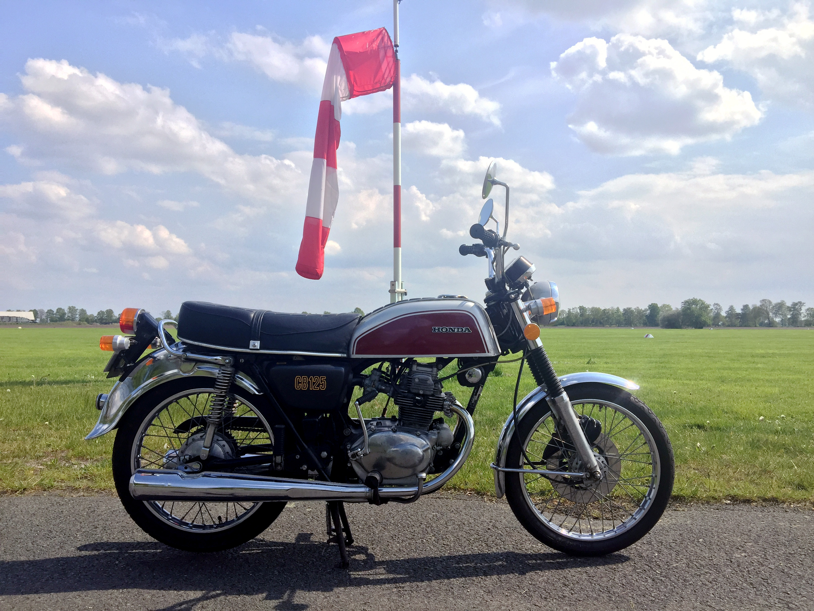
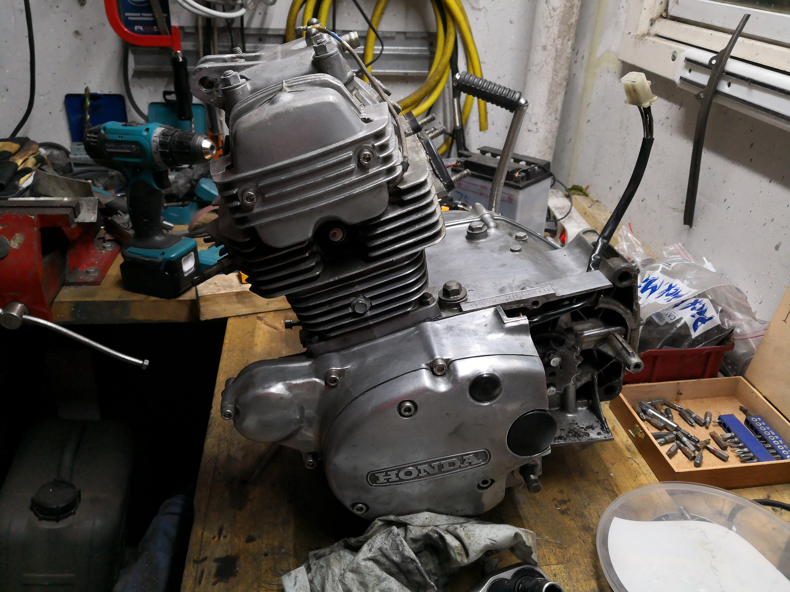
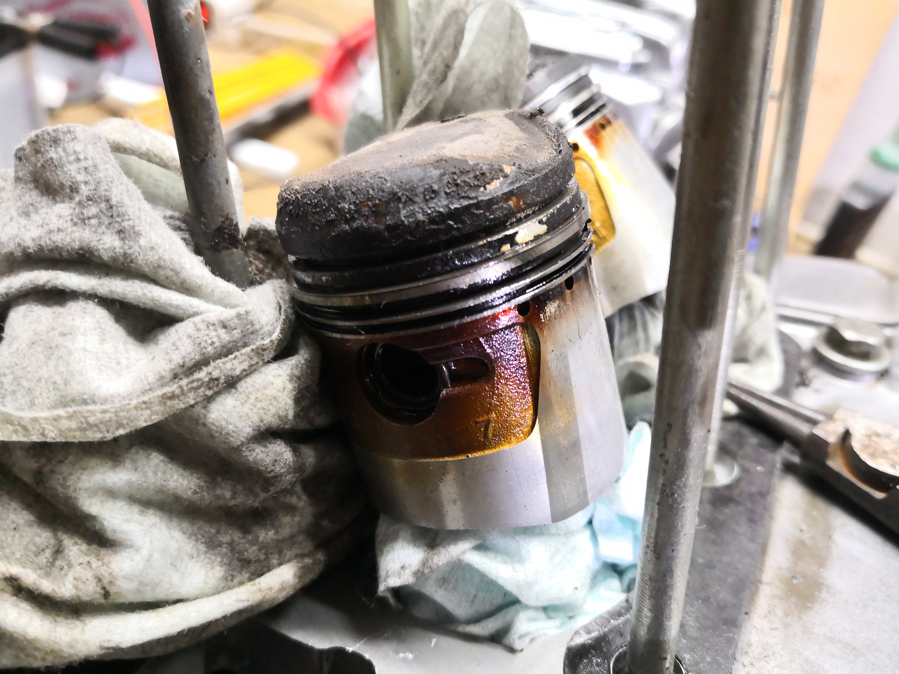
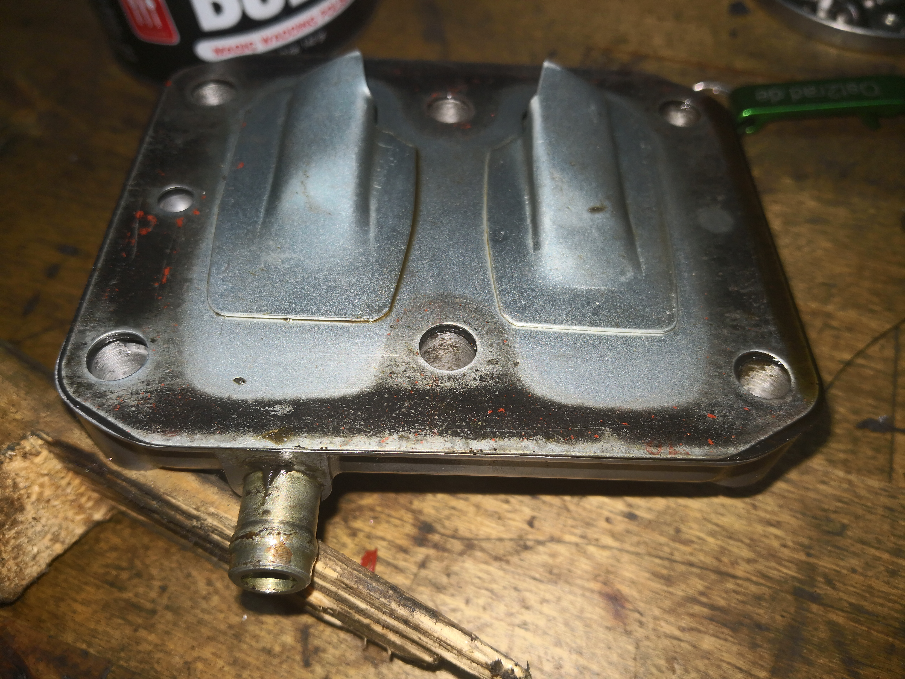
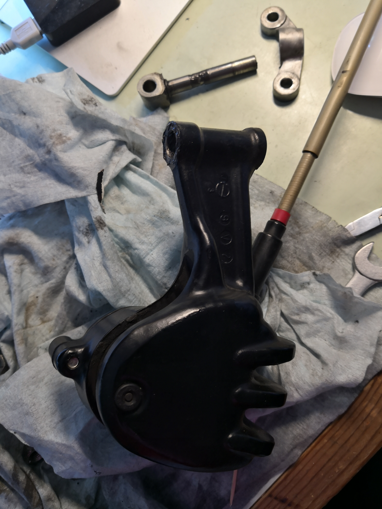

Projekt · Honda
CB125B6 · 1975
Die Restaurierung meiner Honda CB125B6 – vom Neuaufbau in der Werkstatt bis zur Ausfahrt.
Bildergalerie
Eine kleine Honda, ganz neu aufgebaut
Ausgewählte Bilder der Restaurierung – vom Motor über einzelne Details bis zur fertigen Maschine.





